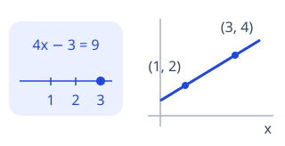

Find your subject, choose a starting point, and explore a few ideas. Use your work and the feedback to decide what to practice next.
Take your report to another AI tutor for more personalized guidance, or keep learning with Cluevera. Use your saved reports to choose what to practice next.
Reports you open and foundation-check answers are saved in this browser when saving is available. Download a copy if you switch browsers or devices. View saved reports →
Your request stays in this browser. Copy it and paste it into your AI tutor, or continue with Cluevera’s lessons and checks.
3 · TRY OUR PROBLEMS
Choose a subject and start.
No learning request is needed. Pick one of six subjects below and start with our activities or a foundation check. Future course routes are marked “Planned”.
SCHOOL MATHEMATICSBeta 0.6

School mathematics
Start with Pre-Algebra and Algebra I: numbers, expressions, equations, graphs, and visual models.